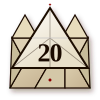

Introduction & Lore
In the verdant forests of the Swine Vale, three siblings — all of the Sus domesticus lineage — seek shelter from an apex predator of considerable lung capacity. Local legends refer to the creature simply as The Wolf. Scholars prefer B. Badwolf. The pigs prefer not to think about it.
The three siblings have, through either ingenuity or stubbornness, constructed dwellings of wildly varying structural integrity. The eldest built quickly and cheaply. The middle child aimed for a balance of speed and stability. The youngest, perhaps unfairly mocked by her siblings, spent months sourcing quality masonry.
This is their story. It will not end well for the first two houses.
Using This Supplement
This scenario is designed for exactly three player characters of levels 1–3. The encounters are linear and will proceed in order. The DM is encouraged to describe each encounter with dramatic flair even though the outcomes are, functionally, predetermined.
DM's Note
This is a linear scenario. The pigs cannot be saved from the first two encounters. Roll anyway. The sound of dice hitting the table is half the point. Players who ask "but what if we help reinforce the straw house?" should be told there isn't time. There is never time.
Adventure Background
The Wolf has roamed the Swine Vale for three seasons. Tax records show a declining property value in every hex the Wolf has passed through. Local housing inspectors have declined to comment.
"The wolf was not acting out of malice, per se. He was acting out of hunger, pride, and a concerning belief that he could resolve structural disputes through breathing." — Field Notes, Swine Vale Historical Society
Setting
All encounters take place in the Swine Vale, a pastoral region notable for its clay deposits, nearby forest, and extremely optimistic building code enforcement. The DM may place this module in any campaign world where pigs and wolves coexist and property law is loosely observed.
2 / 10
Bestiary Entry
Armor Class 13 (Natural Armor)
Hit Points 91 (14d10 + 14)
Speed 50 ft.
STR
18
(+4)
DEX
15
(+2)
CON
12
(+1)
INT
8
(-1)
WIS
7
(-2)
CHA
16
(+3)
Skills Intimidation +5, Athletics +6, Deception +5
Senses Darkvision 60 ft., Passive Perception 8
Languages Common (speaks; rarely says anything useful)
Challenge 5 (1,800 XP)
Proficiency Bonus +3
Legendary Resistance (1/Day). When the Wolf fails a saving throw, it can choose to succeed instead. Note: the Wolf will use this on the brick house. It will not help.
Deceptive Charm. The Wolf has advantage on Deception checks related to "just wanting to borrow a cup of sugar."
Huff. (Recharge 5–6) Each creature in a 30-foot cone must make a DC 14 STR saving throw or the structure they occupy collapses. Straw structures: auto-fail. Stick structures: disadvantage. Brick structures: immune.
Puff. Melee Weapon Attack: +6 to hit, reach 5 ft., one target. Hit: 2d6+4 bludgeoning damage. (The wolf uses its entire body as a battering ram. OSHA has concerns.)
Negotiate (1/Day). The wolf attempts to deceive inhabitants into opening the door. Contested Deception vs. Insight. Insight DC 18 to see through it. No pig has ever failed this check.
"The Wolf maintains it was merely conducting a voluntary respiratory stress test on local architecture. It did not anticipate that the test results would be so immediately structural in consequence."
3 / 10
Encounter 1: The Straw House
The straw house sits in an open field. Wind speed: moderate. Structural confidence: excessive.
Read to players: "The house looks... enthusiastic. You can see daylight through several walls. A small pig waves cheerfully from inside."
AC 5
HP 15
Damage Threshold 0
Immunities Psychic (it cannot feel shame)
Vulnerabilities Everything else
ROUND 1: Wolf uses HUFF.
→ Straw House must make DC 14 STR save. Auto-fail (structure is straw).
→ House collapses. Pig 1 must make DEX save DC 10.
→ Pig 1 rolls... 14. Success! Pig 1 escapes (barely).
ENCOUNTER ENDS. Wolf 1 – Straw House 0.
DM's Note
This encounter will always end this way. The house was never going to make it. Tell your players the dice feel tense anyway. If Pig 1's player rolls a natural 20, describe it as an incredibly athletic escape. Give them nothing else.
Pig 1 retreats toward Pig 2's house. The Wolf follows, slightly out of breath but annoyingly unbothered.
4 / 10
Encounter 2: The Stick House
Pig 2's house is, objectively, better than Pig 1's house. This is not a high bar. It has load-bearing walls. The roof is technically a roof. The Wolf is not impressed.
AC 8
HP 28
Damage Threshold 5
Immunities Psychic, Nonmagical Persuasion
Vulnerabilities Thunder, Bludgeoning, Huffing
Special On STR saves, roll with Disadvantage vs. HUFF attacks.
Pig 2 has been watching through a window. Pig 1 is now also inside, having sprinted across the field and arrived out of breath. The Wolf knocks.
"Little pigs, I just need to borrow a cup of sugar. My blood sugar is very low."
Pig 2 rolls Insight against the Wolf's Deception. Result: 22 vs. 18. The pigs do not open the door.
ROUND 1: Wolf uses HUFF (recharged).
→ Stick House must make DC 14 STR save with Disadvantage.
→ Rolls: 11 and 9. Takes the 9. FAILURE.
→ House collapses. Pigs 1 & 2 must make DEX saves DC 10.
→ Pig 1 rolls 17. Pig 2 rolls 13. Both escape.
ENCOUNTER ENDS. Wolf 2 – Pig Houses 0.
DM's Note
Players may suggest reinforcing the stick house before the Wolf arrives. They may propose nailing additional boards, using stone from a nearby river, or applying an Enlarge/Reduce spell. Tell them there isn't time. There is never time. The module does not account for clever solutions here.
Pigs 1 and 2 sprint toward Pig 3's house. The Wolf stretches, yawns, and follows at a leisurely trot. He is operating at approximately 60% capacity and remains confident.
5 / 10
Encounter 3: The Brick House
AC 18
HP 200
Damage Threshold 10
Immunities Psychic, Thunder, Being Impressed
Special Immune to HUFF. STR saves vs. HUFF auto-succeed. The house was built for exactly this moment.
Pig 3 opens the door just long enough for Pigs 1 and 2 to tumble inside, then closes and deadbolts it. There are four deadbolts. She installed them last month and said nothing about it.
ROUND 1: Wolf uses HUFF.
→ Brick House STR save: Auto-succeed (Immune). House: 200 HP. House: unmoved.
→ Wolf: stunned (self-imposed). Stares at the house for a full six seconds.
ROUND 2: Wolf uses PUFF (desperate).
→ Brick House takes 8 bludgeoning damage. House: 192 HP. House: unbothered.
→ Wolf: 2d6 bludgeoning damage (shoulder, from impact).
ROUND 3: Wolf uses Legendary Resistance on another HUFF.
→ Still auto-fails. Immunity is not a saving throw.
→ The Legendary Resistance is wasted. This is devastating.
WOLF RETREATS. Exhausted. Slightly embarrassed. The pigs are uninjured.
DM's Note
If your players are in the brick house: congratulations. They win D&D. No further rolls are required. Pig 3 makes tea. The Wolf is last seen heading north toward a cave, muttering about respiratory conditions and building permits. You may award full encounter XP. You may also allow a player to say "I told you so" (see Appendix: House Rules).
6 / 10
NPC Profiles: The Adventuring Party
The three pigs are technically NPC allies. In practice, they are the point. The DM should treat them as protagonists who have been assigned the role of tutorial encounter victims.
Pig 1
Rogue, Level 1 · "The Sprinter"
HP: 8
STR 8 | DEX 17 | CON 10
Skills: Fast Talking +4, Quick Exit +6, Optimistic Architecture -3
"Builds fast and leaves faster. Has never spent more than four days on a project. This shows."
Pig 2
Fighter, Level 1 · "The Pragmatist"
HP: 11
STR 13 | DEX 12 | CON 14
Skills: Carpentry +4, Optimism +3, Structural Engineering +1
"Slightly more prepared than Pig 1. This is not the same as being prepared."
Pig 3
Wizard, Level 1 · School of Architecture
HP: 6
STR 8 | DEX 10 | CON 9
Skills: Masonry +8, Long-Term Planning +6, Smug Grin +10
"Physically the weakest. Lives in the only structure still standing. These facts are related."
DM's Note — Playing the Pigs
Pig 3 should occasionally reference having warned her siblings. She is correct. Allow her this. Pig 1 will try to make jokes during combat. Let them land. Pig 2 is quietly processing a lot. Give him a moment in the brick house, sitting on a good chair, holding a cup of something warm. He has earned it.
"The three pigs share a complicated bond built on divergent risk tolerances and a single, formative childhood conversation about the nature of preparation." — Swine Vale Psychological Review, Vol. 4
7 / 10
Loot & Rewards
Players who survive all three encounters without the brick house being destroyed receive the following. Players who somehow lose at the brick house have made a categorical error the module cannot account for.
| Item |
Quantity |
Notes |
| Experience Points |
1,800 XP |
Split three ways. Each pig gets 600. This is enough to level. |
| Brick House (The Holdfast) |
1 |
Fully furnished. AC 18. Pig 3's name is on the deed. |
| Bragging Rights |
Indefinite |
Requires attunement. Pig 3 is already attuned. Has been for months. |
| Wolf's Deviated Septum |
1 |
Trophy item. Worthless. The Wolf claims this explains everything. |
| A Pot of Tea |
1 |
Pig 3 had it ready. She knew. |
| Structural Engineering Pamphlet |
2 copies |
Pig 3 has had these printed. Pigs 1 & 2 each receive one. |
Experience Breakdown
Surviving Encounter 1 (Straw House) ........... 100 XP
Surviving Encounter 2 (Stick House) ............. 200 XP
Winning Encounter 3 (Brick House) ............. 1,500 XP
Total .................................................. 1,800 XP
Optional: Wolf's Remorse
At the DM's discretion, the Wolf may return in a later session having sought counseling. He now leads a community workshop called "Alternative Dispute Resolution: Beyond Huffing." The pigs decline to attend. They send a card.
"The correct shelter has been standing. It was always going to be standing. The pigs have known this for three days, a fortnight, and an entire childhood, respectively."
8 / 10
Appendix A: House Rules
The following optional rules are provided for DMs who want to add variety to an otherwise structurally determined scenario.
Huffing and Puffing as a Skill
Any player character may attempt to blow down a structure using Constitution. DC 14. The Wolf auto-succeeds on this check. Player characters may not attempt this check against the brick house. The brick house is not interested.
Architectural Critique
Any player who says "I told you so" to Pig 1 or Pig 2 — verbally, at the table — gains 1 Inspiration. Any player who says it twice gains nothing. They have made their point.
The Wolf's Point of View
If the DM wishes to play the Wolf sympathetically, see optional sidebar "Maybe He Was Cold." The sidebar proposes that the Wolf was simply seeking warmth during an unseasonably harsh winter. This does not excuse the structural damage. It does make the Wolf slightly more relatable.
Pig 3's Moment
After the Wolf retreats, Pig 3 is allowed one (1) complete sentence of satisfaction. Players who interrupt her lose Inspiration. She has earned this sentence.
Building Codes
A rules-as-written reading of the scenario assumes no local building code exists. DMs may introduce a Building Inspector NPC who arrives after Encounter 1 to cite Pig 3's house for "excessive fortification." This is a great bit. Use it if your table is enjoying themselves.
Variant: The Wolf Was Right
In this variant, the Wolf was genuinely lost and did not intend to destroy any houses. The huffing was an allergic reaction to straw. This variant is less satisfying narratively but more accurate to certain witness accounts. Run it if your players are lawyers.
A Note on Fairness
This scenario is not fair. Architecture is not a character flaw. Pig 3 is not smarter than her siblings — she simply had different priorities and more time. The DM should, if the table allows it, give all three pigs a moment that shows who they are beyond their building materials.
9 / 10
Credits & Legal
⚔️ 🐺 🏠
DUNGEONS & DOMESTICS: THE HUFFENING
A Supplemental Scenario for Three Little Players
Design & Writing: The Pigs (Pigs 1, 2, and 3). Pig 3 wrote most of it. Pig 1 added jokes in the margins. Pig 2 formatted the stat blocks correctly and asked that we acknowledge this.
Playtesting: Conducted over three sessions. Results were consistent.
Monster Consultation: The Wolf was not consulted for this publication. His attorney submitted a 14-page statement which we have summarized as "he disagrees."
Legal Review: None. We are pigs. We do not have lawyers. Pig 2 is pursuing a paralegal certification.
Licensing Notice
DUNGEONS & DOMESTICS is unofficial Fan Content of a well-known tabletop roleplaying game. D&D is a trademark of Wizards of the Coast. This supplement is not affiliated with, sponsored by, or endorsed by Wizards of the Coast.
The Wolf's stat block is original content and should not be reproduced without credit. If you reproduce it, just say "the pigs made this." That's enough.
About the Publisher
Published in the Forest Vale by Holdfast Press, an imprint of Pig 3 Enterprises. Holdfast Press specializes in architectural reference texts, survivalist guides, and occasional manifestos about the importance of quality materials.
Final DM's Note
Thank you for running this module. If your players had fun, it was because you made it fun. If they didn't, they probably kept trying to negotiate with the Wolf. That's on them. The house still stands. It always stood. The story ends well, and it ends in brick.
10 / 10